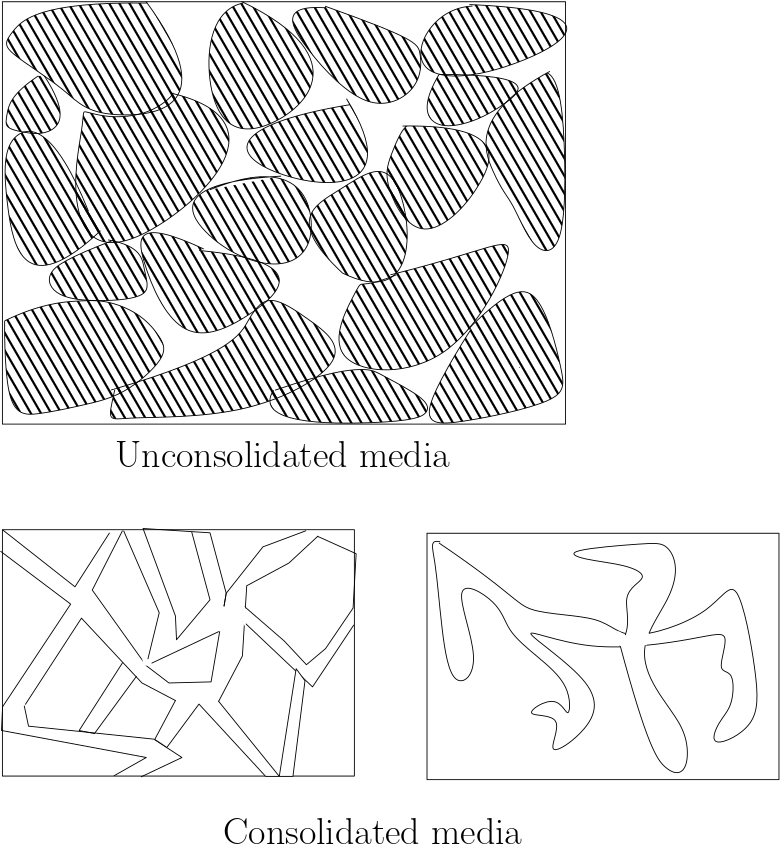
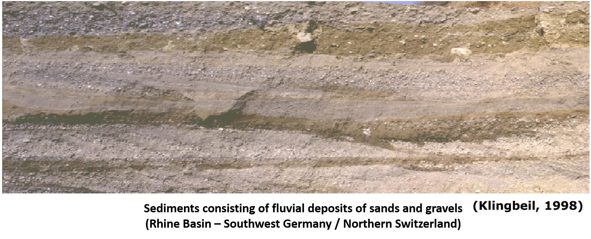
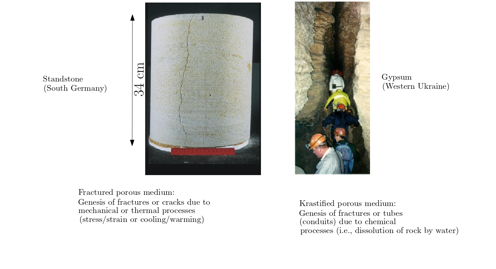
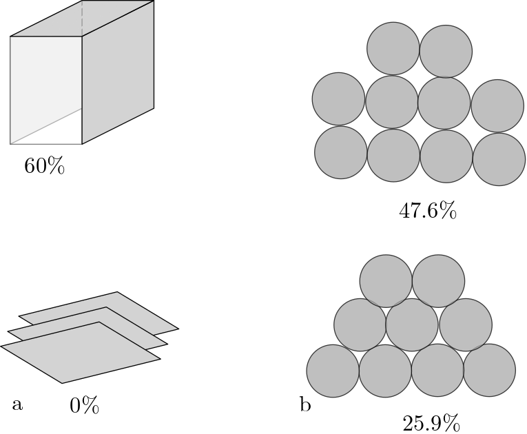
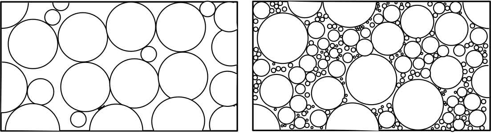
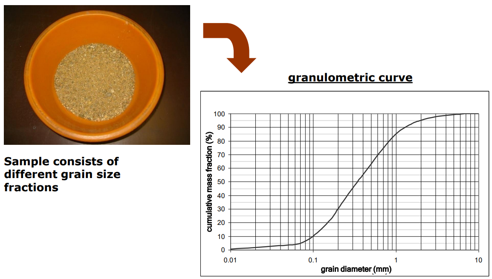
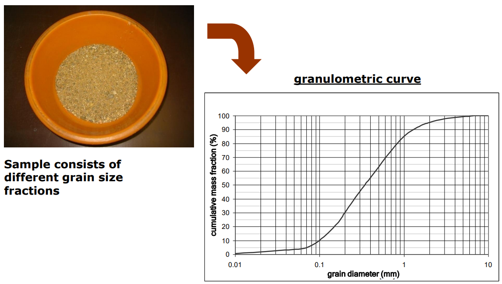
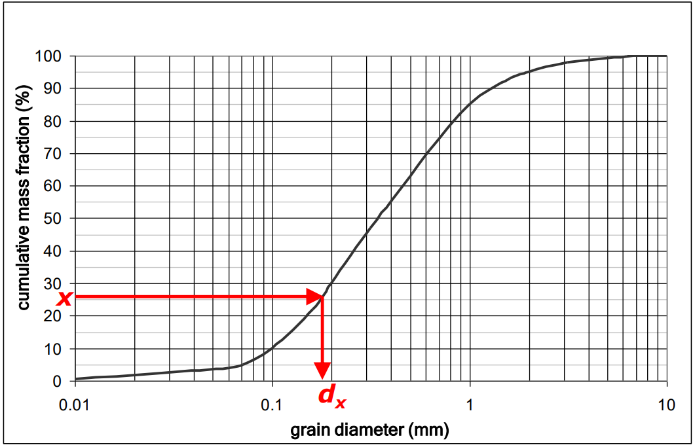
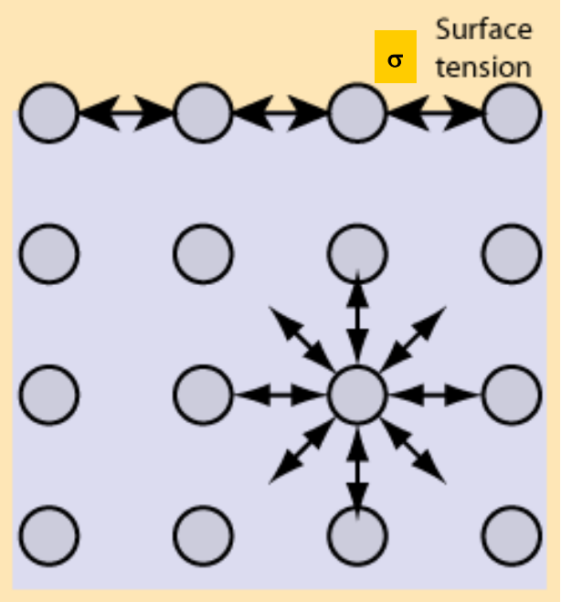

Subsurface Structure
Contents
1. Subsurface Structure#
(The contents presented in this section were re-developed principally by M.Sc. Hanieh Mehrdad and Dr. P. K. Yadav. The original contents are from Prof. Rudolf Liedl)
1.1. Porous Media#
The general definition of the porous media is a solid which contains voids. This definition applies to the subsurface contains solid material plus voids which represent storage and transmission of the water. The voids may have various shapes and contain fluids (mostly air and/or water). Moreover, voids may be connected to or disconnected from each other. Generally voids and their properties are important to determine water storage (how much water is or could be available?) and water transmission (How fast the water can move?).
1.2. Types of porous media in the subsurface#
{kind=link}
Unconsolidated porous medium (Sediments): it is non-cemented porous media and the grains can be taken away. The formation of such porous media is due to deposition of solid material mostly by water.
{kind=link}
Consolidated porous medium (Rocks): the formation is due to increased pressure acting together with thermal and chemical processes. It has two types:
Fractured porous media
Karstified porous media
{kind=link}
1.3. Porosity (Total porosity):#
Is defined as the volumetric share of voids in a porous media. It is a number between 0 and 1 and can be expressed as percentage (0%: no voids, 100%:no solid)
\(n\)= total porosity
\({V_{v}}\)= voids volume
\({V_{T}}\)= total volume
1.3.1. Example Problem#
If the total volume of a media is 254 cubic meters, and the volume of the void is 27 cubic meters, what is the porosity (give as a percent)?
# input data
V_T= 254 #m^3 total volume
V_v=27 #m^3 voids volume
#calculations
n=(V_v/V_T)*100
# Output
print(" Total porosity is: {0:0.2f}%".format(n) )
Total porosity is: 10.63%
1.4. Total porosity of artificial porous media:#
If “grains” have identical shape and are regularly arranged, it is possible to exactly compute total porosity, the pores should have the same size.
{kind=link}
Loose packing(first picture): each hole placed on top of the hole underneath
Dense packing (second picture): each hole is placed at the deepest position possible
These schematics provides a practical range of porosity in the subsurface. The general range is between 25% to about 50%. In more extreme cases porosity higher than 60% is possible, e.g., cobbles, gravel. The other extreme, subsurface with no porosity (0%) is also encountered in the subsurface, e.g., in consolidated rocks.
1.5. Total porosity of natural (unconsolidated) porous media:#
Natural unconsolidated porous media consist of grains of different size. Total porosity depends on the grain size distribution.

{kind=link}
In general, well sorted unconsolidated porous media exhibit larger total poerosities than poorly sorted unconsolidated porous media. In the figure above on the left in which grain diameters cover a small range, i.e., well-sorted, the porosity can be approximated in the range 32%. Similary, in the (above) figure on the right in which the grain diameters cover a large range, i.e., poorly sorted, the porosity can be approximated in the range 17%.
1.6. Typical porosity values:#
Table below provide the total porosity of unconsolidated and consolidated media.
Total porosity of consolidated porous media (rocks) is usually smaller than total porosity of unconsolidated porous media. However, weathering effect may lead to increase the value of porosity. only for unconsolidated porous media, total porosity tends to increase with decreasing grain size.
1.7. Grain size distribution of unconsolidated porous media#
Unconsolidated porous media are able to store and transmit water that can be influenced by grain size distribution. Therefore, the grain size distribution is frequently determined in laboratory experiments in order to deduce important flow properties. There are five major grain size classes (observed by increasing diameter): clay, silt, sand, and gravel (or debris). The classes for silt, clay and gavel are usually subdivided by “fine”, “medium”, and “coarse” (or “very fine”, “fine”, “medium”, “coarse”, and “very coarse”). Different ranges for individual grain size classes have been defined by different authorities or regulations. However, the standard method to determine the grain size distribution of a sample is sieve analysis.
1.8. Classification schemes:#
The diagrams below include a couple of classification schemes to define ranges of grain diameter for clay, silt, sand, and gravel:

As can be observed that there exist several standards. These are often based on local requirements e.g., based on countries. In Germany the DIN standards are used.
Click for the abbreviation
USDA: United States Department of Agriculture, ISSS: International Soil Science Society (ISSS), MIT: Massachusetts Institute of Technology, ASTM: American Society for Testing and Materials, AASHTO: American Association of State Highway and Transportation Officials, FAA: Federal Aviation Administration
1.9. Sieve analysis:#
The results from a sample consist of different grain size fractions should be transferred on granulometric curve. This curve provides cumulative information; vertical axis shows the mass fraction, and horizontal axis shows the grain diameter. For example, if 1mm grain diameter has 80% of cumulative mass fraction it means that 80% of this sample contains 1mm grain diameter or less than 1 mm (see the picture below).
How to get granulometric curve? In order to perform sieve analysis we can use sieve machine. Sieve machine consist of sets of sieves from coarse sieve on top to fine sieve and a cup at the bottom. The mechanism is to shake the set. Finally, each sieve consists of grain sizes which are bigger than the sieve.
 

{kind=link}
dx and U: From the granulometric curve, several parameters can be determined in order to characterize the sample. \({d_{x}}\) denotes the grain diameter for which x% (in mass or weight, not volume) of the sieve material is smaller than this diameter.
{kind=link}
Grain diameters \({d_{10}}, {d_{60}}, {d_{75}}\) are of practical importance with regard to groundwater flow properties. The ratio of d60 and d10 is called coefficient of uniformity, U:
\({d_{75}}\) is specifically used for well construction purpose (not covered by this lecture)
1.10. Subterranean water#
The subsurface can be regarded as a three-phase system consisting of a solid phase (soil particles), a water phase, and a gas phase. a schematic illustration for voids or pores in an unconsolidated porous medium is given in the figure below. Each phase has similar density and other properties. Sometimes it is possible for the fourth phase which is contamination.Voids are filled with water and gas. The volumetric ratio of water in voids can be calculated by water content.

1.11. Water content:#
Water content is defined as the share of water in the porous medium:
\( {\theta}\) = water content
\( {V_{w}}\) = water volume
\( {V_{T}} \) = total volume
Water content cannot exceed the total porosity. i.e. θ≤n ( total porosity is independent of the fluid content of porous medium).
1.12. Degree of saturation:#
Another way to express the ratio of water in the porous medium is the degree of saturation, i.e. the ratio of water volume to void volume:
\({S}\)= degree of saturation
\({V_{w}}\)= water volume
\({V_{v}}\)= voids volume
The degree of saturation is equal to \(\frac{\theta}{n}\) . \(S\) can vary between 0 to 1 (or between 0% to 100%), in which \(S=0\) means no water in the voids, whereas \(S=100\) means voids are completely filled with water.
1.12.1. Example Problem#
The voids volume and the total air in the subsurface sample (0.2 m\(^3\)) was found to be 0.02 m\(^3\) and 0.001 m\(^3\), respectively. How much water does the sample contain and what is the degree of saturation?
# solution
V_T = 0.2 # m^3, Total sample.
V_v = 0.06 # m^3, volume of voids
V_a = 0.004 # m^3, volume of air
# interim calculation
V_w = V_v - V_a # m^3, Vol. water, the remaining volume
# calculation
Theta = V_w/V_T # -, water content
S = V_w/V_v # # -, degree of saturation
# print
print("The water content of the sample is: {0:.0%}".format(Theta),"\n")
print("The degree of saturation of the sample is: {0:.0%}".format(S))
The water content of the sample is: 28%
The degree of saturation of the sample is: 93%
1.13. Forces acting on subterranean water:#
Subterranean water is subject to several forces. The most important ones are:
gravity
attractive forces between the water molecules (cohesion)
attractive forces between water and solids (adhesion)
{kind=link}
In the figure above, dotted area represent the solid phase. In the pore channel the dominant force is gravity, shown as G. getting closer to the solid surface, adhesive force become more important. The numbers indicate the required pressure to remove the corresponding layer of water from the solid surface. As an example, in order to remove the last layer of water from the solid surface, 31 bar pressure needs to be applied. Another easy way to remove the water is boiling the sample in the oven.
1.14. Surface tension:#
Cohesive forces acting on water molecules compensate each other if the molecule is not located near water-air or water-solid interface. This is no longer true at an interface: cohesive interaction is reduced on one side. The resulting force tends to minimize the interface area. Macroscopically, this effect is parametrized by the “surface tension”, which is defined as the energy needed to increase the area of the interface by one unit.
{kind=link}
Common units of the surface tension σ are \(\frac{J}{m^2}\) or \(\frac{N}{m}\) (Its dimension is \(\frac{M}{T^2}\)). The surface tension of water is about 7.5 . 10 -2 \(\frac{N}{m}\) at 10 ֯C.
1.15. Capillary action:#

Water is subject to capillary action when adhesion is strongr than cohesion. The capillary rise of water in a tube depends on the surface tension and the tube redius. The maximum capillary rise is given by:
\({h_{c}}\)= maximum capillary rise
\(\sigma_{w}\)= surface tension
\(\rho_{w}\)= water density
\({g}\)= acceleration of gravity
\({r}\)= radius of the tube
1.16. Capillary action in the subsurface:#
Capillary actions play a dominant role in the subsurface. The capillaries are given by individual pore channels. Poor channels in poorly sorted material may strongly differ in diameter, such that a certain variability in capillary rise is observed.

Left sketch shows the capillary rise in a perfectly sorted material which all the pores have the same size. So capillary rise is similar in every single pores. The right sketch, shows a real situation of subsurface. There are different grain size and then different pore channels, which results in various capillary rise.
1.16.1. Example Problem#
For water at a tube with a radius R, the surface tension is 73 \(\frac{g}{s^2}\), the density is 0.999 \(\frac{g}{cm^3}\). Compute the rise of water in the capillary tube
# input data
sigma= 73 #g/s^2 surface tension
rho= 0.999 # g/cm^3 water density
g=980 #cm/s^2 acceleration of gravity
#calculation
h_c=(2*sigma)/(rho*g)
#output
print("The maximum water rise in this tube is: {0:0.2f} 1/R cm".format(h_c))
The maximum water rise in this tube is: 0.15 1/R cm